今日、探したのは、何かおもしろそうなもの。
ゲームのアイデアになりそうなものなら、なおよし。
平面なのに、立体的に見える。
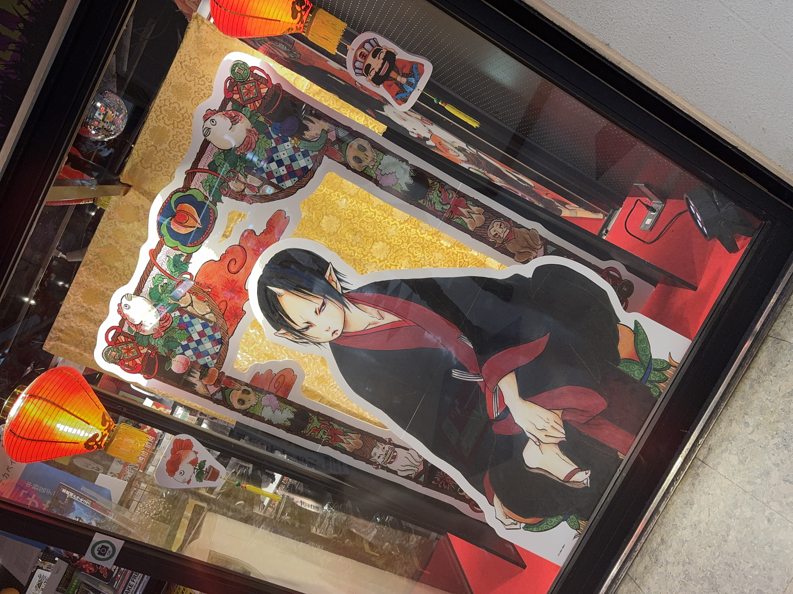
キャラクター自体は平面のイラストなのだが、背景と前景を別々に配置することで、立体的な空間を演出している。いわば、アナログな2.5D表現だ。
特別な技術を使わなくても、平面を重ねるだけで奥行きが生まれる。
あの先には、何があるんだろう？
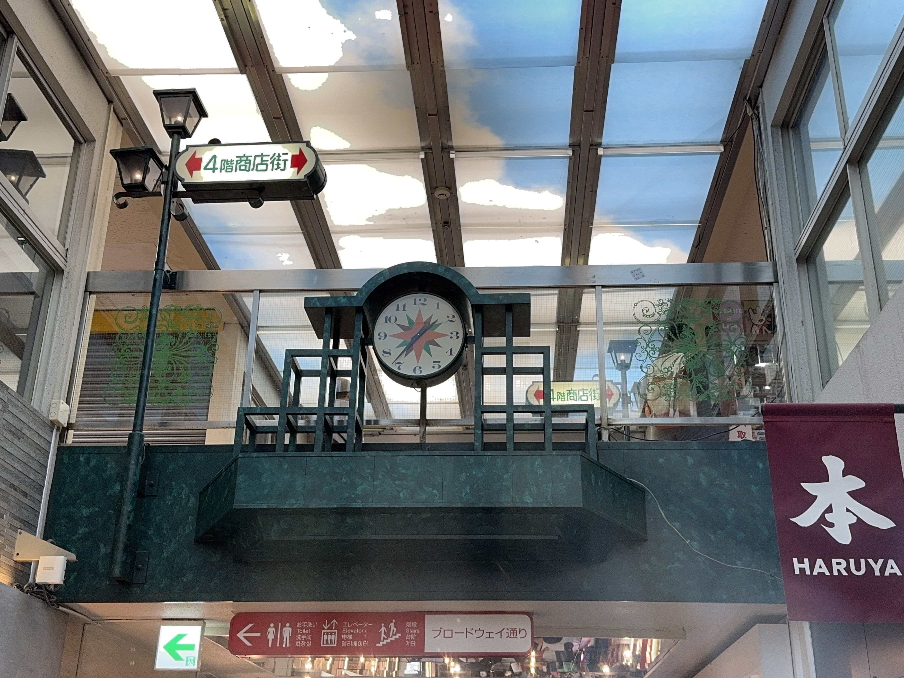
次に気になったのは、上に見える通路。レトロな時計、街灯のような照明、広い天井。
すべてが見えている場所よりも、少しだけ見えていて、その先がわからない場所に行きたくなるのかもしれない。
鳥居は、くぐるもの。
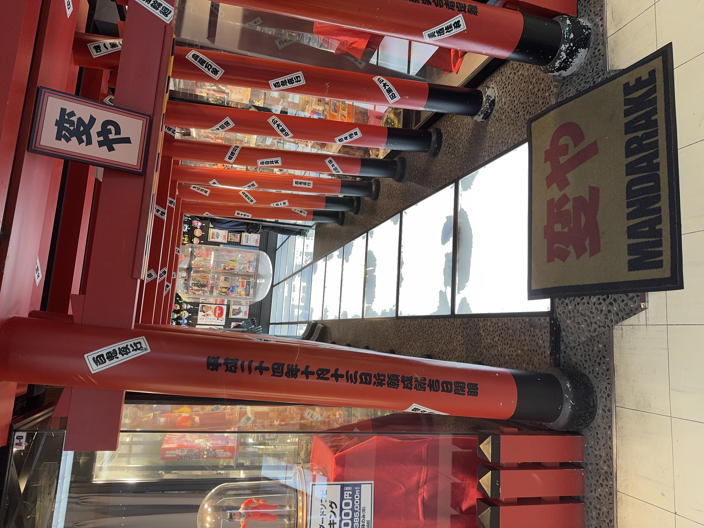
鳥居を見れば、多くの日本人は自然と「くぐるもの」だと認識する。人間の経験や先入観を利用した、入店を促す秀逸なデザインだと思った。
動くものには、目が行く。
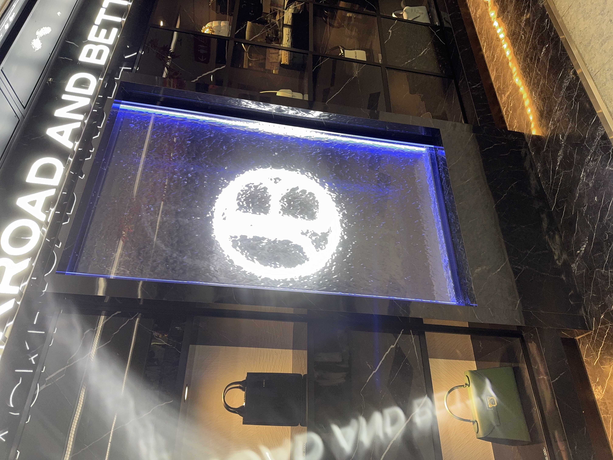
ショーウィンドウの中を水が流れるディスプレイ。写真では伝わりにくいが、実際には水が絶えず動いている。
人間は動くものに注意を向けやすい。当たり前のことだが、実際に体験すると、その効果の大きさを実感する。ゲームのUIでも、PVでも、動きを加えることは強力な視線誘導になる。
中野の自販機は、自己主張が強い。
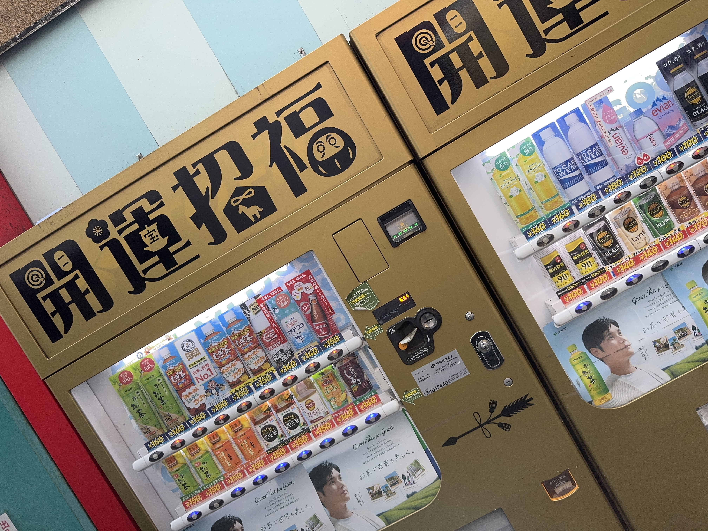
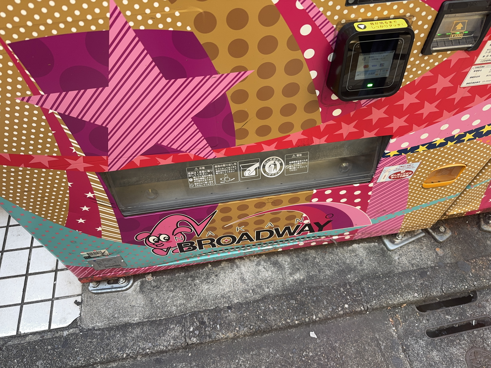
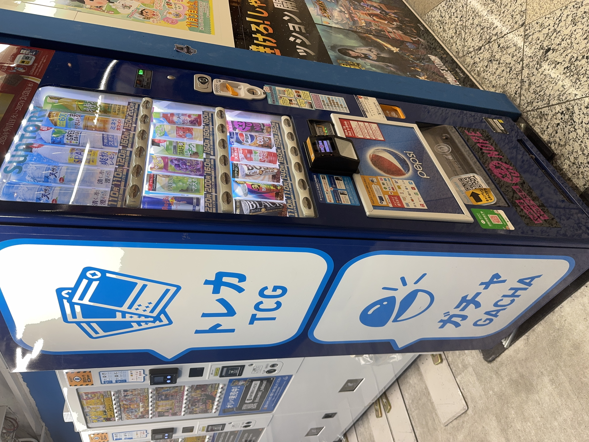
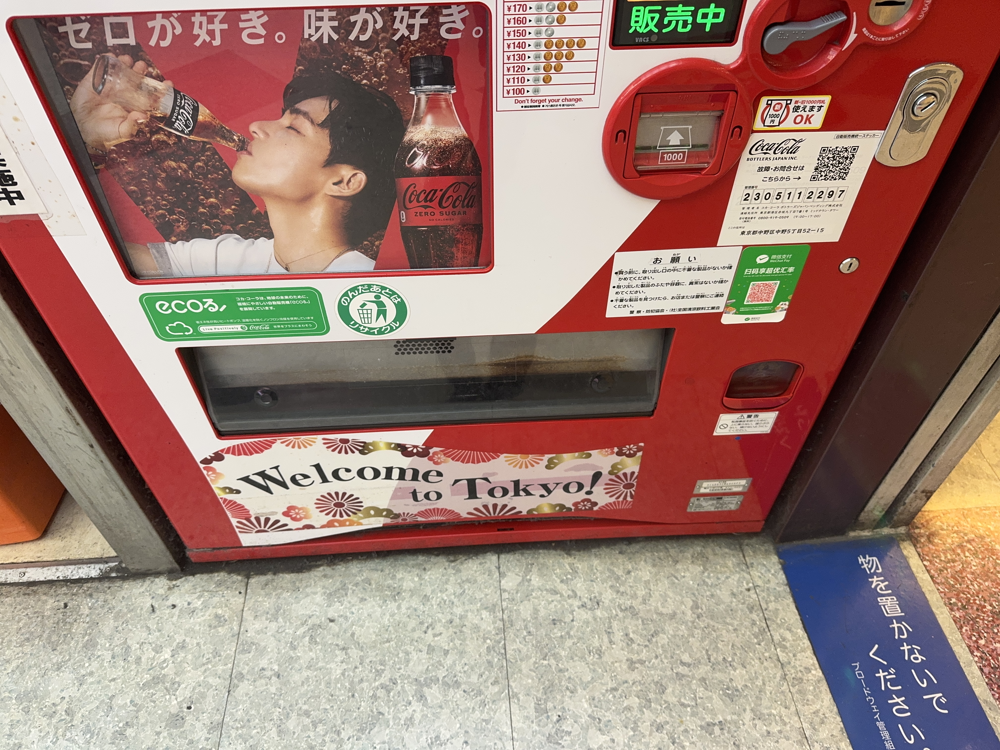
自動販売機は、日本中どこにでもある。中野にしかないわけではないが、中野の自販機は妙に個性的だ。
普通のテーブルでもよい。
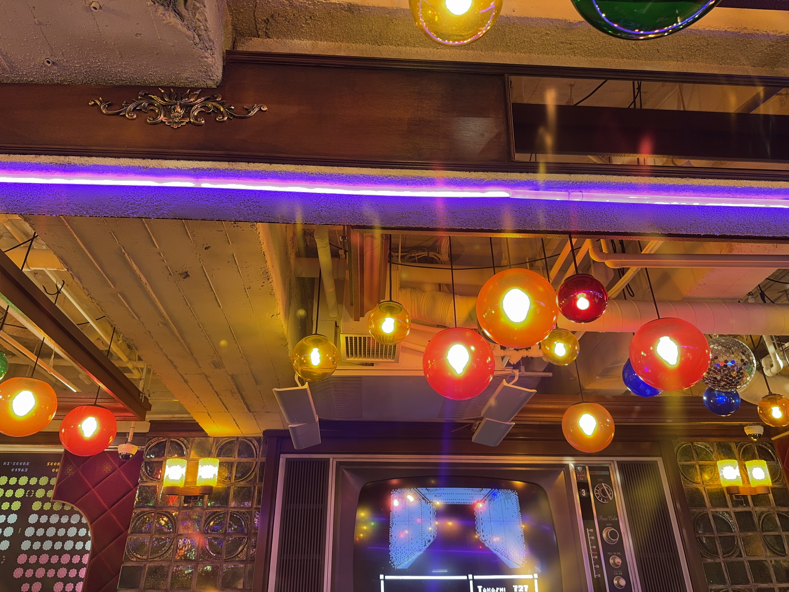
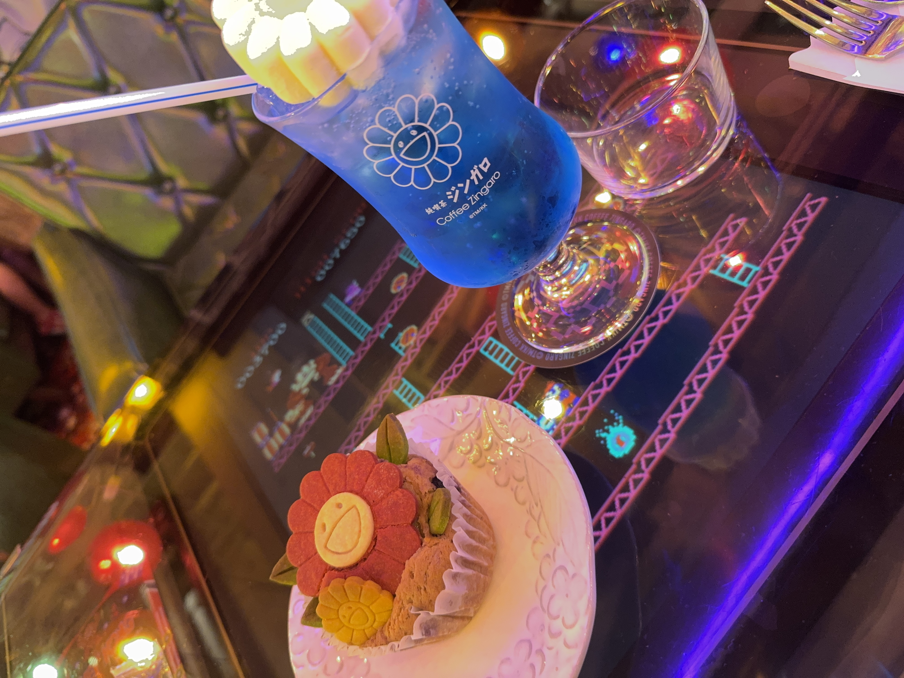
テーブルには、レトロゲーム。これが気になって入店してしまった。
ゲームをしたければアプリでもいい。ジュースを飲みたければ自販機でいい。合理性や効率だけでは説明できないデザインが、人を引きつけることもある。
カオスの中で、最も異質だったもの。
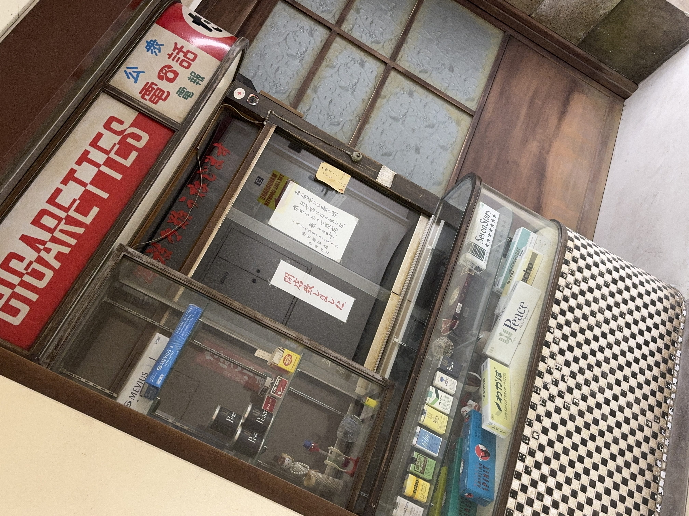
昔ながらのタバコ屋だ。ガラスケースにはタバコが陳列され、公衆電話の看板が掲げられている。
よく見ると「閉店致しました」の張り紙がある。どうやら、本当に営業していた店が、そのまま残されていただけだったらしい。
中野ブロードウェイには、派手な店舗も、奇抜な装飾も、珍しい商品も山ほどある。しかし、その中で今日一番、異質に見えたのが、昔ながらの普通のタバコ屋だった。営業していたとしても面白い絵面だっただろう。
周囲が奇抜すぎると、普通のものが奇抜になる。何が普通で、何が異常なのか。それは、周囲の環境によっても簡単に変わってしまう。
面白いものを見つけようと意識するだけで、いつもの街が少し違って見える。そして、世の中には、自分がまだ知らない発想や、理解できないこだわりが山ほどある。
効率や合理性ばかりを追いかけていると、面白いものを面白いと感じる感覚が鈍ってしまうかもしれないから。
たまには目的もなく街を歩く。そんな時間があってもいい。
じゅんを